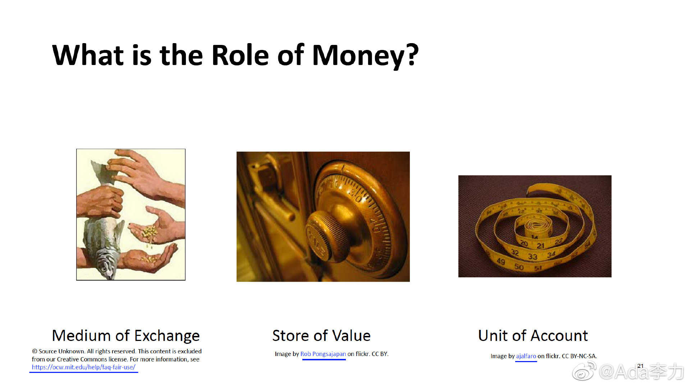

2014年，美国联邦税务局说比特币是财产而不是货币。为什么要这么定性？因为对财产才可以征税。@Ada李力:#一个人的企业#“Blockchain and money"是门研究生课，所以很多问题是师生间在探讨，并没有定论，比如比特币算货币吗？有学生拿出货币的三个角色来证明，如果比特币具有这三个角色，那么它就是货币。在第一堂课Gary提过，如果长得像鸭子，游泳走路像鸭子，叫声像鸭子，那它就是个鸭子。但Gary引用他敬佩的某金融人士说法：比特币算加密资产，而不是加密货币，因为货币的三个角色，还没有得到验证。Gary还没有给出他的看法和结论，这门课听起来愈发有意思了。